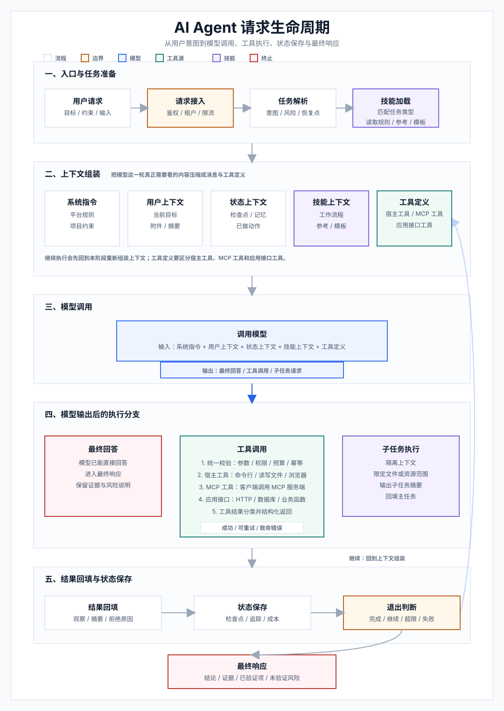

Technical Documentation
AI Agent 工程结构
本页只解释 AI agent 的运行逻辑：请求怎样进入模型，工具在哪里执行，状态怎样回到下一轮，以及 build-ai-agents skill 的分析来源和安装方式。
Agent 是运行时
模型、指令、工具、循环/图、状态、权限、观测和测试共同构成 agent。
模型只做决策
模型产出回答或工具调用；真实副作用在运行时和工具处理器里完成。
结果会回到下一轮
工具执行后的结果会写回状态，再重新组装上下文给模型判断。
Skill、Tool、MCP 分层
Skill 提供工作方法；Tool 执行动作；MCP 是可复用能力协议。
1. Agent 请求生命周期：从提示词到最终响应
一次请求会经历任务准备、上下文组装、模型调用、执行分支、状态保存和退出判断。继续执行时，会回到上下文组装再调用模型。
流程图 A：Agent 请求生命周期
边界 / 策略
模型决策
外部执行
隔离子任务
终止 / 响应

| 阶段 | 发生了什么 | 怎么理解 |
|---|---|---|
| 请求进入 | 用户输入先被整理成任务 | 模型不会直接接管整个系统，它只处理这一轮需要看的内容。 |
| 上下文组装 | 系统指令、用户目标、状态、记忆、技能规则和工具定义被放到一起 | 这是“调用模型前”的准备步骤，继续执行时也会回到这里。 |
| 模型调用 | 模型决定直接回答，还是请求调用工具 | 模型做决策；读文件、写文件、命令行、MCP、接口调用由工具执行。 |
| 回填与退出 | 工具结果写回状态，然后判断继续还是结束 | 没完成就进入下一轮；完成后才生成最终响应。 |
2. 技能、工具、MCP 的关系
这三个概念职责不同。Skill 指导 agent 怎么处理一类任务；Tool 是运行时可执行能力；MCP 是把外部能力接入成工具、资源或提示模板的协议边界。本地命令行、读写文件、浏览器等能力需要和 MCP 分开看。
流程图 B：技能、工具、MCP 的边界
| 概念 | 一句话 | 例子 |
|---|---|---|
| Skill（技能） | 告诉 agent 这类任务应该怎么处理 | SKILL.md、参考资料、模板 |
| Tool（工具） | 模型可以请求调用的具体能力 | 读写文件、命令行、浏览器、HTTP、数据库 |
| MCP（协议） | 把外部能力用统一协议接进来 | MCP 工具、资源、提示模板 |
3. 这个项目分析了哪些项目
这个 skill 不是从单一框架抽象出来的，而是把几个典型 agent 项目和权威文章的模式压缩成通用说明。
| 项目 | 项目简介 | 主要学习点 |
|---|---|---|
| Pi | 面向终端和本地开发环境的编码 agent 项目，强调可扩展工具、会话管理和 skill 机制。 | 编码 agent 的循环、会话、skill 加载、扩展机制和 subagent。 |
| OpenAI Agents JS | OpenAI 官方 TypeScript agent SDK，用于构建带工具、交接和安全边界的 agent 应用。 | 标准 TypeScript agent SDK 里的 agent、tool、交接、防护规则和运行状态。 |
| LangGraphJS | LangChain 生态的 JavaScript/TypeScript graph 编排框架，适合表达有状态、多步骤 agent 流程。 | 可持久化 graph、checkpoint、人工介入和多 agent 交接。 |
| MCP TypeScript SDK | Model Context Protocol 的 TypeScript SDK，用统一协议把工具、资源和提示模板暴露给模型客户端。 | MCP 客户端/服务端、工具、资源、提示模板和传输边界。 |
| Vercel AI SDK | 面向 TypeScript 和前端应用的 AI 应用 SDK，覆盖流式生成、工具调用、UI 集成和 provider 适配。 | 应用层 ToolLoopAgent、WorkflowAgent、流式 UI、审批和 MCP 客户端。 |
| Spring AI Examples | Spring AI 官方示例集合，展示 Java/Spring 应用中接入模型、工具、RAG 和 agentic workflow 的方式。 | Java/Spring 里的 agentic workflow、函数回调和 MCP 注解。 |
| LangChain4j | Java 原生的 LLM 应用框架，提供 AI Service、工具调用、记忆、RAG 和 agent 能力。 | Java AI service、工具执行器/提供器、agentic service 和 skills 集成。 |
| Anthropic：Building Effective Agents | Anthropic 工程团队的权威文章，给出何时该用 workflow、何时该用 agent 的高层判断框架，而非具体框架实现。 | workflow 与 agent 的边界、五种 workflow 模式、自治 agent 循环、简单性 / 透明性 / 工具接口设计。 |
4. 安装 build-ai-agents skill
这个 skill 让 agent 在具体项目里处理 AI agent 相关任务。页面只保留安装方式；具体实现和审查由安装后的 skill 指导 agent 完成。
# 先获取 skill 仓库
git clone https://github.com/caocong1/ai-agent-skill-lab.git
# 方式一：安装到当前项目
mkdir -p .agent/skills
cp -R ai-agent-skill-lab/skills/build-ai-agents .agent/skills/build-ai-agents
# 方式二：安装到当前用户
mkdir -p ~/.agent/skills
cp -R ai-agent-skill-lab/skills/build-ai-agents ~/.agent/skills/build-ai-agents
# 方式三：复制下面这段 prompt 到你正在使用的 agent
请帮我安装 build-ai-agents skill。
Skill 仓库地址：https://github.com/caocong1/ai-agent-skill-lab.git
请先获取该仓库，然后把仓库内的 skills/build-ai-agents
安装到你当前打开工作目录的 .agent/skills/build-ai-agents。
安装后请确认 .agent/skills/build-ai-agents/SKILL.md 存在。
如果你无法访问该仓库，请停止并说明需要我粘贴哪些文件内容。
触发示例：用 build-ai-agents 审查这个项目的 agent 工具权限和循环控制。